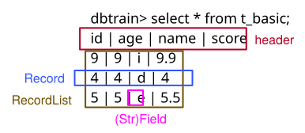

LAB 1 记录管理实验文档
实验概述
本次实验主要关注于数据库底层记录管理模块的功能，理解无格式的原始字节数据到与格式化的记录之间的转化过程。重点关注于关系型数据库系统在页式文件管理系统中表的数据组织，如何在定长页面中管理记录的存储和加载。
实验任务
本次实验主要有两个任务：
- 阅读代码，对于记录管理模块有一个结构性的理解
- 设计底层记录页面组织，完成记录管理的各项基本功能
相关模块
- record 模块：需要理解 Record 和 Field 的基本函数，同时实现 Record 的存储和加载函数。
- table 模块：需要理解 Table 的基本函数，在实验中不要求处理数据表元信息 (TableMeta)。重点关注于通过 PageHandle 在定长的页面中组织记录数据。
基础功能实现顺序
- table/table_meta.cpp: TableMeta 的序列化和反序列化。
- record/record_factory.cpp: 字段 Field 和记录 Record 的序列化和反序列化
- table/page_handle.cpp: 页面内的记录插入、更新、删除
- table/table.cpp: 上层记录插入、更新、删除的接口函数
可选高级功能
不要求将高级功能集成到主分支中，建议单开分支完成实验。但是建议同学们设计验证自己实验结果的测例并给出测试的可视化结果展示。
- 变长记录存储：实现 varchar 类型的变长存储，需给出实现方式的示意图，以及使用前后存储空间变化。
- 数据加密或数据压缩：使用加密或压缩相关库对表数据进行加密和压缩，同时支持数据的查询和更新，需给出相关性能参数（如压缩加密的时间，对查询性能的影响）以及实际 HEX 编码变化。
- 删除记录空间回收：自动回收已经删除的记录条目所占用的空间，设计回收策略，如什么时候进行回收，如何回收，需要给出执行效率和存储空间变化
同时也鼓励同学们结合相关课程内容提出自己的创新设计。
考虑到本次实验高级功能实现难度较大，只需完整实现一个高级功能即可得到满分，如果没有实现高级功能，可以在报告中写出高级功能的设计方式，也可得到部分分数。
特别注意第二项数据加密最好采用记录或字段级别的相关加密技术，或者包含完整密钥管理的成熟页面级别加密技术。简单在页面 IO 过程中使用同密钥加密的安全性不足，无法获取全部分数。数据压缩则重点需要考虑到数据更新过程中的优化。简单在 IO 过程中直接调用压缩和解压函数的更新效率同样无法获取全部分数。
一条 SQL 语句的运行流程
为理解实验框架工作流程，我们以 show databases 语句为例，来分析 SQL 是如何一步步转化为我们期望的结果的。
cli 程序的主函数位于 cli.cpp 文件，该文件的核心代码为：
ast:: Visitor *visitor = new ast:: Visitor();
Result result = std::any_cast<Result>(ast::parse_tree->accept(visitor));
printer->Print(&result);
delete visitor;
对于输入的 SQL 文本，首先通过 yyparse 函数对 SQL 进行解析，语法文件位于 parser/sql.y，解析后将 SQL 转化为语法树节点，语法树节点的定义位于 parser/ast.h 文件。
随后通过 ast::parsetree->accept 方法对语法树进行遍历，解析器采用 visitor 模式，遍历时程序会进入 SQL 语句对应的 visit 函数中，对于 show databases 这条 SQL 语句，遍历后会进入 parser/visitor.cpp 的 Visitor::visit(ShowDatabases *) 函数：
std::any Visitor::visit(ShowDatabases *) {
return SystemManager::GetInstance().ShowDatabases();
}
该函数直接调用 SystemManager 对象的 ShowDatabases 函数，位于 system/system_manager.cpp 文件：
Result SystemManager:: ShowDatabases() {
RecordList records;
for (const auto &db_name : db_names_) {
Record *record = new Record();
record->PushBack(new StrField(db_name.c_str(), db_name.size()));
records.push_back(record);
}
return Result(std::vector<std::string>{"Database"}, records);
}
SystemManager 为数据库的系统管理模块，主要负责数据库的创建、删除、查找、切换、关闭，表的创建和删除功能。该类采用单例模式实现，只需调用 SystemManager::GetInstance() 即可获得 SystemManager 对象。
由于 SystemManager 在初始化时已经在 db_names_ 中记录了当前所有数据库的名称，我们只需将 db_names_ 的内容包装为 Result 对象即可。
查看 result/result.h 中 Result 类的定义：
class Result {
...
private:
std::vector<std::string> header_;
RecordList records_;
};
发现该类的数据成员由 header_ 和 records_ 组成，分别表示输出结果的表头和输出结果的内容，对于 show databases 命令，我们简单地将 header_ 设置为 Databases，然后只需将 db_names_ 包装为 RecordList 对象，一个结果对象的组成部分如下：

在 record/record.h 文件中找到 RecordList 以及 Record 的定义：
typedef vector<Record*> RecordList;
class Record {
...
private:
vector<Field*> field_list_;
RecordList 为由多个 Record 指针组成的数组，Record 类由 Field 指针数组组成。
再从 record/field.h 文件中找到 Field 类的定义，同时发现 Field 类被 IntField, FloatField 和 StrField 类继承，对于 show databases 的结果，我们需要将每个数据库的名称包装为 StrField 的对象，然后依次构建 Record, RecordList，最终构建出 Result 对象，这就是 SystemManager 的 ShowDatabases 函数所做的事情。
返回 Result 结果后，cli 函数通过 printer->Print(&result) 将结果打印出来，一条 SQL 的运行就结束了。
如需了解 Insert, Delete, Update, Select 等语句的运行过程，可查看 parser/visitor.cpp 中对应的 visit 函数，这些语句运行过程中可能需要 Preprocessor 类为 SQL 中的列添加对应的表，随后通过 Optimizer 构造相应的算子节点并生成查询计划，最后通过执行器的 RunNext 函数执行查询，具体代码位于 optim 和 oper 两个文件夹下，实验 1 需要重点关注 oper/scan_node.cpp 中的 TableScan 节点的实现。
建议同学们开始实验前首先阅读代码，充分了解不同 SQL 的运行过程，然后再填充缺失代码，了解实验框架也会为之后的实验带来帮助。
每创建一个数据库，会生成一个文件夹，文件夹里会存在 LOGDATA, LOGIDX 和 MASTER 等文件，这些是 lab2 相关的日志文件，你在 lab1 无需关注；每创建一张表，会生成两个文件，后缀名为 .meta 和 .data，分别存储表的结构元信息（表中有多少个列，每列的数据类型，每列的长度，以及一些关于表的页面的相关信息）和表的数据。
在实验 1 中，你需要首先实现 table_meta 的 Load 和 Store 函数，这两个函数实现了表的元信息加载存储，Load 函数将页面中的无格式字节数据反序列化为内存中的数据信息，Store 函数将内存中记录的信息通过序列化存储到页面中，并进一步由 BufferManager 存储到磁盘，从而实现表的元信息的持久化存储，正确实现此功能后，你应该可以成功通过 00_setup 的第 14 条 SQL（前 13 条 SQL 不需要对实验框架做任何修改即可通过）。
随后你需要实现 record/record_factory.cpp, table/page_handle.cpp, table/table.cpp 中的相关函数，建议实现之前先通过阅读代码了解 Insert, Delete, Update, Select 语句的运行过程，思考如何设计存储页面，然后根据注释填充代码。
截止时间
2023 年 3 月 26 日（第五周周日）晚 23:59 分。